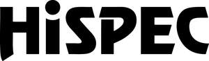

Trade Mark Journal No.2025/013 28 March 2025
UK00004170528 7 March 2025 (9,11,41,42)
Mark 1

Mark 2
Mark 3
- Class 9
- Safety monitoring apparatus [electric]; electrical and electronic apparatus and instruments for detecting fire, heat, smoke, noxious and/or toxic substances; smoke alarms; smoke sensors; smoke detectors; heat alarms; heat sensors; heat detectors; fire alarms; fire alarm control panels; fire alarm buttons; fire alarm bells; fire sensors; fire detectors; carbon monoxide sensors; carbon monoxide detectors; carbon dioxide sensors; carbon dioxide detectors; combination carbon monoxide and smoke detectors; combined smoke and heat alarms; combined heat and carbon monoxide alarms; radio frequency carbon monoxide detectors; radio frequency heat detectors; radio frequency smoke detectors; radio frequency control units; interconnectable carbon monoxide detectors; air quality sensors; smoking detectors; vape detectors; motion detectors; occupancy detectors; microwave sensors; lighting control apparatus; lighting control panels; safety beacons; strobe lights [warning beacons]; illuminated signs; illuminated exit signs; electrical relays; mains control units; transformers; cables; extension cables; electrical plugs; plug sockets; smart plugs; switches; sensor switches; parts and fittings for the aforesaid goods.
- Class 11
- Lighting apparatus; lighting; lighting fixtures; light fittings; lighting fixtures for commercial use; lighting fixtures for household use; site lighting; emergency lighting; security lighting; outdoor lighting; flood lights; work lights; wall lights; lighting lamps; lamps; lanterns; lighting panels; lighting tubes; lighting battens; luminaires; light bulbs; smart light bulbs; LED lighting; LED bulbs; smart LED bulbs; torches; head torches; parts and fittings for the aforesaid goods.
- Class 41
- Provision of education, training and continuing professional development (CPD) training in best practices and industry standards in the electrical, fire safety and/or lighting industries; provision of education, training and continuing professional development (CPD) training in the field of safety, fire safety, fire detection, carbon monoxide detection, and use of electrical, lighting and/or emergency lighting equipment; provision of consultancy, information and/or advice in relation to the aforesaid services.
- Class 42
- Design of lighting systems; lighting design services; provision of consultancy, information and/or advice in relation to the aforesaid services.
Hispec Electrical Products Ltd
Representative: Two IP